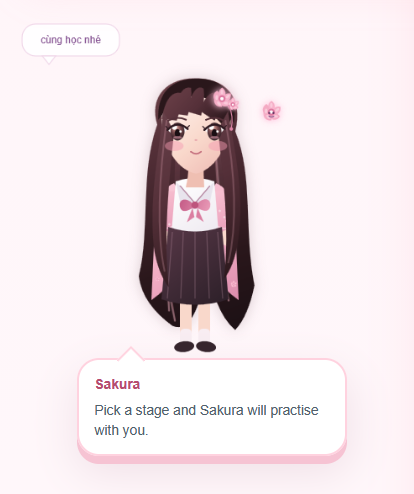

In the two previous articles, I told two different stories. The article “when go becomes goed” explained why a mistake that looks childish or silly is actually a linguistic signal with its own logic. The data article explained how that mistake becomes a row of data. This article is the missing piece between those two: the story of how I built the web app that generated those rows of data, and why at one point I had to switch off the part I liked most.
For a while, I built this irregular-verb learning app exactly like a child handed a box of Lego: if I could plug something in, I plugged it in. Duolingo had streaks, so I added streaks. It had hearts, so I added hearts. It had a cheering mascot, so I drew an entire girl named Sakura, gave her different emotions, made her happy when learners were correct, sad when they were wrong, and excited when a streak got longer. At that time, I simply thought my learners were two primary-school children, and children need something cute beside them, not a cold progress bar. That was how Sakura was born, and I genuinely liked gamifying learning.
That part was fun, and I do not regret it at all. But it created a problem I only noticed later. The funny thing is that the problem was not in the code. It was in the fact that I had forgotten I was wearing two hats at the same time.
scroll down

Sakura speaks in practice · Sakura stays quiet in measurement
Inside the trial page
What is inside Tg's trial learning page?
Before telling the build story, I think it helps to walk around the trial page first, because not everyone reading this has clicked into it before.
When the page opens, the first thing is to choose a mode: a casual trial session, or a code-protected login for the real Learner A and Learner B data. After that, there are four practice modes: sentence fill-in, multiple choice, self-checked flashcards, and a skill-path route where learners unlock verb clusters stage by stage, a bit like the way Duolingo moves learners through small lessons.
Every answer has Sakura in the corner of the screen. She reacts immediately: nodding when the learner is correct, looking sad when they are wrong, jumping up when a streak is kept. There are hearts, XP, and a small weekly leaderboard so the two children can sometimes tease each other about who studied harder. I intentionally made this part feel as game-like as possible, because for primary-school learners, a serious test-like interface often backfires from the first minute.
Behind that cheerful interface is the part I liked most. Each answer is not only marked right or wrong; it is classified into one of seven error types: correct, overregularization with -ed, confusion between past forms, minor spelling error, blank answer, or other error. From there, the system updates both the memory strength of the individual verb and the stability of the whole verb cluster. On the surface, it looks like a game. Underneath, a fairly serious tracking system is quietly running.
When I first started coding, I was not thinking seriously about data collection. I only wanted a page where my two students could practise for fun. So the trial page came first: an open mode where anyone could start practising without logging in, and where nothing touched the official dataset.
Only later, when the two children had settled into a learning routine, did I add a private entrance. With the right code, I could open the real data for Learner A and Learner B. Visitors to the blog could still only use the trial version, and their data would never be mixed into the research dataset.
Sakura · idleSakura · comeback
Part II · A manual workflow
Nothing was fully automated.
The workflow at that time was quite manual. I was the person writing code, the teacher sitting beside the students, and the person manually typing paper-test scores into a data table. Some days, after a lesson ended, I stayed for another half hour just to enter dozens of handwritten answers while the students had already closed their books.
The truth is that nothing was completely automated. And perhaps because I was supervising it myself, I noticed small details that a fully automated system would have missed.
paper test → manual entry → web practice log → teacher notes → readable data
Part III · Four sources of data
The data in this small project came from four places.
To make it easier to picture, the data in this small project came from four places.
First were the paper tests. The two children sat down and answered on paper, the way I used to do when I was a student. Then came my turn, not as the teacher, but as a data-entry person typing each handwritten answer into a table.
Only after that came the fun part: web practice sessions, where every action was logged automatically, including correctness, response time, whether a hint was used, and so on. Finally, there were my own notes. Whenever the system suggested something that did not make sense, I noted why I chose not to follow it.
Written like this, it sounds quite organized. In reality, at the beginning it was messy. My solution was to make use of everything I had, especially AI, and apply it wherever it could keep the research process from becoming too slow and heavy.
01 · paperpre/post tests in a setting with fewer interventions.
02 · webpractice logs, response time, hints, errors, and cluster scores.
03 · observationnotes from sitting beside the learner and seeing what the system could not see.
04 · overridemoments when I ignored the algorithm's suggestion and recorded why.
Part IV · When Sakura was doing her job
If I only looked at this as learning experience design, I could have stopped here proudly.
I will admit it directly: the gamification worked better than I expected. The two children really liked Sakura. They liked hearing her praise them, liked watching the XP bar go up. One day, a learner got three questions wrong in a row and started to look discouraged, but Sakura clumsily crawled back up, because my animation was imperfect, and the learner laughed and kept going. If I were only looking at this as a learning experience designer, I could have proudly stopped here and called the work done.
But the problem was that I was not only designing an experience. I was also trying to measure how much the students actually remembered. This is where my two roles began to collide.
correct · Sakura praiseswrong · Sakura softens the mood
long streak · Sakura celebrates
Part V · The moment I muted her
I no longer knew whether I was measuring memory or excitement.
One day, while reviewing the test data, I got stuck on a question that would not let me go: did that high score really come from the student remembering the word, or partly from Sakura praising them right before, from an audio hint, from the feeling of a small reward waiting at the end of the round?
The more I looked at the data, the more I could not pretend those factors did not exist. Sakura made the kids happier, hints kept them from getting stuck, sound cues pulled recall up faster, rewards made learning feel less like a dry test. All of that was useful during practice, but if I let it show up during measurement, I would no longer know whether I was measuring independent recall, or a child's reaction to a learning environment designed to make them more excited.
That was when I truly understood why research methods books keep insisting on separating intervention from measurement. Before, I read that as a fairly dry theoretical line. Once I looked at the data from my two students myself, I saw how concrete that line actually was.
So the final decision was fairly simple, though painful to carry out. During the pre- and post-paper tests, Sakura had to disappear completely: no praise, no hints, no sound, no rewards, no instant feedback. She only came back during ordinary practice sessions, where the goal was to keep motivation up, support retrying, and leave a learning trail for the teacher to read later.
In other words, Sakura still stayed inside the learning process, just not standing next to the student while I was measuring memory. I lost a lovable part of the testing experience, and in exchange I got something more important: a dataset I dare to trust.
Context
Sakura's role
Why
Practice
praises, gives feedback, hints, creates a sense of company
keeps motivation up and helps kids keep practicing
Measurement
stays completely silent
reduces effect on memory data
Part VI · From a playful idea to a research question
The boundary did not arrive as one clear timestamp.
If you ask where the line sits between making something for fun and doing research, honestly, I do not have one clean moment to point to. It came from many small steps piling up.
Step 1The first step was simply noticing. Not through numbers, just by ear. The two children kept repeating the same kind of error on words that sounded very different: goed, runned, putted. The words had almost nothing in common in meaning, but the wrong form looked strangely similar. At first I thought it was probably a coincidence, until it happened often enough to stop feeling like one.
Step 2The second step was looking for whether someone had already named the phenomenon. That led me to overregularization, to Marcus and colleagues, to Bybee, and to the realization that what I was seeing had been described for decades. It just had not yet been tied to a real review system for a tiny real class like mine.
Part VII · Breaking down the vague thing
If I believe this is real, how do I prove it with only two students?
Step three was the hardest one. I had to break the vague observation into things that could be measured. Errors had to be named as seven specific types. Verbs had to be grouped into morphological clusters. Every learner response had to become a structured data row, not just a right-or-wrong mark. This was where I moved from accidentally noticing something to having to answer the question: if I believe this is real, how do I prove it with only two students?
Step four, the one that kept me awake quite late, was writing the proposal: forming the research question, defining what interpretable meant, defining what alignment meant, and only then returning to the code to make it fit those definitions, not the other way around. This was exactly where I saw the Sakura problem described above. The decision to move testing back onto paper came from the proposal-writing process itself, not from a neat plan made in advance.
observation → reading literature → code → proposal → code follows definitions → measure again
Sakura can hint during practice, not during measurement
Part VIII · The honest corner
I had to make it a little less fun to make it a little more honest.
Looking back, my workflow did not follow the straight line that research-methods books often draw: idea first, research later. It looped around. I observed first, read later, coded first, defined later, then returned to the code so it could match the definitions. For a tiny one-person project like this, that looping path may have been the only workable path.
I do not think this is some grand discovery. Anyone doing education research already knows that measurement should be separated from intervention. What I wanted to record is the real feeling of someone building both a game and a study: the moment you have to make the thing you love a little quieter in exchange for data you can trust a little more. Sakura is still there, still dancing during practice. She just knows when to stay silent now.
when a lesson is abandoned halfwaywhen the wait lasts too long
Playful during practice, quiet during measurement.
The difference is not whether Sakura is adorable. The difference is the purpose of the session: one side needs motivation so children keep going, the other needs cleaner data so I dare to read it.
That is my favorite part of this piece: the same character, the same system, but a different role depending on context.
practice mode
Sakura speaks, smiles, hints, gives flowers, restores hearts, and pulls the learner back into the lesson.
measurement mode
Sakura disappears so the paper test contains only the learner's answer.
Sakura is still there. She just knows when to stay quiet.
This piece sits between the two goed essays: one about why the error has logic, and one about how the error becomes data. In the middle is the very ordinary story of someone building a learning app: sometimes the part you love most has to step back so the data can become more honest.